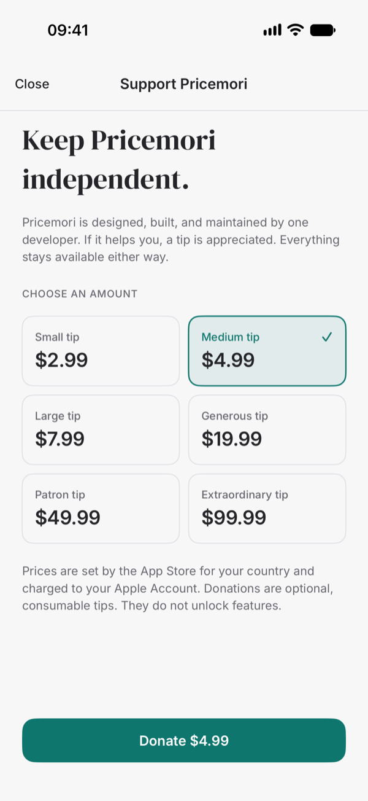
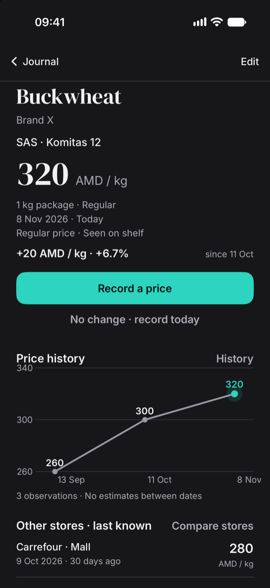

Know what things really cost.
Remember prices at your regular shops. Build a history from your own shelf labels and receipts, and compare an offer before the next purchase.
No account. No cloud. No automatic catalog. Just your observations.
Built for iPhone · iOS 18+ · Free


A price book that stays honest.
Record in seconds
Keep the product and branch, default to today, and suggest the previous package size. “No change” creates today’s observation in one tap, with Undo.
Compare like with like
Same product, branch, currency, unit, and conditions. Card and multi-buy offers stay separate. Unit prices normalize grams, kilograms, litres, and items.
See the real history
Charts connect recorded observations only. Dates and ages stay visible. No invented daily values, forecasts, or “current” prices from an old receipt.
Keep your data
Full JSON backup, CSV export, validated merge, and safe replacement that requires a safety copy first.
17 languages
Switch language in Settings without restarting. Dates, numbers, and price wording follow the selected locale.
Stay private
No account, analytics, advertising, tracking, or network calls. Your journal is stored locally with SwiftData.
Support independent work
Optional tips through the App Store are available from the heart button in the journal. Tips unlock nothing and change nothing.

Keep the app free.
The heart next to Add opens six optional tip amounts. Donations are consumable App Store purchases, not a subscription, and they unlock nothing. Prices follow the user’s App Store storefront, with lower-price storefronts configured separately.
Tips are handled by Apple. The developer never sees payment details.
No account. No server. No scraping.
Pricemori is built for manual observations. You decide which products are worth tracking. A purchase is not required — a shelf label is enough.
Available in English, German, French, Spanish, Brazilian Portuguese, Polish, Russian, Ukrainian, Armenian, Japanese, Vietnamese, Simplified Chinese, Korean, Italian, Dutch, Turkish, and Indonesian.
- Core recording and charts work offline.
- Backups leave the app only when you export them.
- Archived products and stores keep their history.
- Donations are optional consumable tips, handled by Apple.
